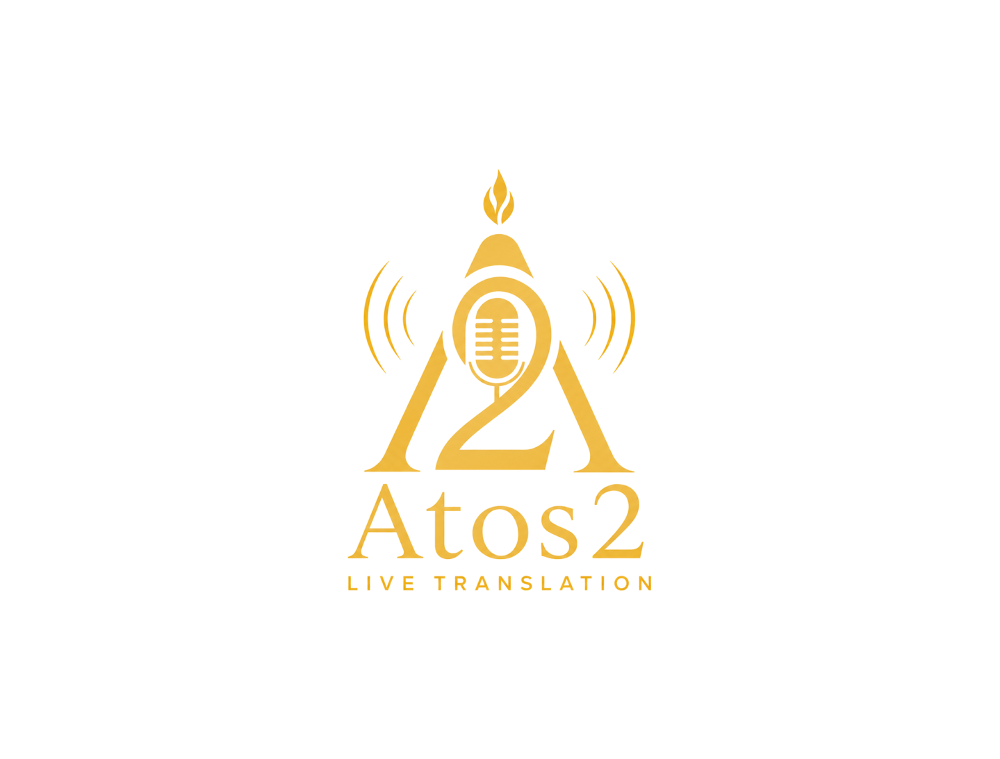

Igreja Brasileira de Londres
PT → EN
Atos2
Controls
Translation
The translation will appear here as the preacher speaks…
Waiting for audio…

Service Setup
Select the sound desk input (e.g. "CABLE Output", "USB Audio", "Scarlett") or the microphone.
Fixed code for this church. The congregation scans the QR code to read the translation on their own phones. Use a unique code per church.
Proper names that come up during the service (pastor, church, ministries, preachers). Helps transcribe and translate these names correctly.
Upload the sermon as PDF or Word (.docx). The AI reads it once before the service to learn names, key terms, Bible references and the theme — for a sharper, more natural translation. Leave empty to run exactly as today.
How much the preacher pauses before a line is sent. Short = fast captions (as today). Long = fuller, smoother sentences.